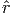
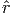
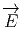
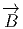
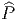

REMARQUE : La théorie des connexions métriques en général et la géométrie riemannienne en particulier mériterait à elle seule plusieurs volumes… Malgré l’importance du sujet, la présente section est relativement brève et doit être considérée par le lecteur comme un simple survol permettant d’illustrer certaines des constructions générales précédentes. Nous voulons considérer la notion de connexion métrique comme un cas particulier de la notion de connexion réductible, et l’ensemble des repères orthonormés associés à une métrique comme un cas particulier de réduction d’espace fibré principal. Nous engageons le lecteur à discuter de façon analogue d’autres types de géométries (par exemple les structures presque complexes).
Soit FM = FM(M,GL(n, I R)) le fibré principal des repères sur la variété M. On considère une réduction de FM à un fibré principal de repères orthonormés OM = OM(M,SO(n)). Cette réduction est caractérisée par une métrique g qui, en chaque point, est donnée par une forme bilinéaire symétrique non dégénérée sur l’espace tangent. On sait que g peut être considérée comme une section globale du fibré en espaces homogènes E = E(M,GL(n, I R)∕SO(n)). Le lecteur aura noté que nous considérons une réduction à SO(n) et non à O(n), en d’autres termes, la variété est supposée orientable et orientée. Localement, c’est à dire relativement au choix d’un repère mobile (eα) ou d’un repère naturel ( ∂__ ∂xμ), g est donnée par
La matrice gμν étant non dégénérée en chaque point, nous pouvons considérer son inverse, notée (gμν). Ainsi gμνg νρ = δρμ. On obtient donc ainsi une forme bilinéaire symétrique sur l’espace cotangent. Cette forme est le plus souvent également notée g (mais il peut arriver de la noter g-1 !).
On se donne une connexion linéaire dans FM. Une métrique étant donnée, on suppose que cette connexion est compatible avec la réduction de FM à OM. On peut aussi supposer, de manière équivalente, qu’on se donne directement une connexion principale dans le fibré OM. On dit alors qu’on s’est donné une connexion métrique. Par construction, la métrique est orthonormée lorsqu’on l’écrit à l’aide des repères de OM. Soit {ea} un repère mobile orthonormé, alors g = ea ⊗ ebηab ou η est diagonal et constant (composantes ±1). Lorsqu”on considéré la métrique comme 0-forme à valeurs dans le fibré des tenseurs symétriques de rang 2, qui est inclus dans Ω0(M,TM ⊗ TM), on voit immédiatement que
La différentielle covariante de g est donc nulle, mais ceci peut alors s’écrire dans n’importe quel repère, orthonormé ou non {eα}. Ainsi, ∇g = (eα ⊗eβ)Dg αβ et
L’existence d’un produit scalaire non dégénéré g permet d’identifier un espace vectoriel avec son dual et de “monter” ou “descendre” les indices à volonté. On pose donc

Il ne devrait pas y avoir de confusion possible au niveau des notations : lorsqu’on écrit Γαβ, c’est que cet objet est une 1-forme (Γαβ = Γαβγeγ) et qu’on a utilisé la métrique pour abaisser le premier indice de fibre. Si on écrit, au contraire, Γγ, c’est qu’on parle alors du potentiel de jauge et qu’on a simplement fait apparaître l’indice de forme (qui est toujours en troisième — et dernière— position).
L’équation de compatibilité (condition de métricité) s’écrit alors
Si on se place dans un repère orthonormé, les fonctions gαβ sont des constantes. Il en va de même dans un “repère mobile de forme invariable” (précisément défini en imposant la constance des gαβ). Dans ce(s) cas, dgαβ = 0 et la condition de métricité s’écrit simplement


Une autre façon de retrouver de façon très naturelle (et sans calcul !) cette propriété d’antisymétrie est de se rappeler que les 1 - formes Γα β ne sont autres que les éléments de matrice Γα β = Γa(X a)βα où les X a constituent une représentation de l’algèbre de Lie du groupe structural, en l’occurrence SO(n), et ce sont donc, automatiquement, des matrices antisymétriques.
Nous verrons un peu plus loin que, pour une connexion bien particulière (la connexion de Levi-Civita) et dans des repères particuliers (les repères naturels), les coefficients de connexion possèdent également une propriété de symétrie sur les deux derniers indices.
Si, contrairement à ce que nous supposions ci-dessus, on se donne séparément une métrique g et une connexion linéaire Γ quelconque, il n’y a aucune raison pour que la connexion soit réductible. En d’autres termes, il n’y a aucune raison de supposer que cette connexion soit compatible avec la métrique. Si ∇ désigne la différentielle covariante associée à Γ, on définit alors le tenseur de non-métricité


Etant donnée une métrique et une connexion linéaire compatible (qui, a priori, possède de la torsion), nous allons voir qu’il est possible d’exprimer les coefficients de connexion en terme de la métrique, de ses dérivées premières, du tenseur de torsion et des fonctions de structure du repère mobile choisi.
Utilisant la métrique, on définit

Nous avons vu que la condition de métricité s’écrivait ∇g = 0, c’est à dire, en terme de composantes gαβ;γ = 0. Ceci implique

Les trois lignes ci-dessus sont quasiment identiques mais attention à notre façon de “descendre” les indices (comparer la définition de Tαβγ et celle de fαβγ). Nos conventions concernant la position des indices ne sont pas universelles…
L’expression ci-dessus des coefficients de connexion Γαβγ a été calculée en travaillant dans un repère quelconque (ainsi, par exemple, gαβ,γ = eγ[gαβ]). En travaillant dans un repère naturel on a, plus simplement, gμν,ρ = ∂ __ ∂xρ[gμν] et fμνρ = 0.
L’expression

Le tenseur

Le calcul précédent montre donc qu’une connexion linéaire compatible avec une métrique donnée est entièrement caractérisée par cette dernière et par la torsion de cette connexion (on peut toujours faire disparaître les fonctions de structure du repère mobile en se plaçant dans un repère naturel).
Le calcul précédent montre aussi que, étant donnée une métrique, si on impose une torsion nulle, on obtient une unique connexion compatible qui s’exprime entièrement en terme de la métrique. Cette (unique) connexion s’appelle la connexion de Levi-Civita ou encore la connexion riemannienne. Re-exprimons ce résultat sous la forme suivante :
Soit OM le fibré principal des repères orthonormés associé à une métrique donnée. Alors, parmi toutes les connexions possibles sur le fibré OM, il en existe une et une seule qui soit sans torsion. On l’appelle la connexion de Levi-Civita.
Pour cette connexion, et en repère naturel, on a donc simplement

De façon générale, l’expression du tenseur de torsion en terme des coefficients de connexion et des fonctions de structure du repère mobile (expression rappelée ci-dessus) montre que, si on utilise la connexion de Levi-Civita (Tμνρ = 0) dans un repère naturel (fμνρ = 0), les coefficients de connexions possèdent la symétrie suivante :

Il n’est pas difficile de démontrer que, dans le cas où la connexion n’est pas compatible avec la métrique, il faut rajouter, au second membre de l’équation donnant l’expression de 2Γμνρ, la quantité
Nous avons déjà analysé en détail les propriétés du tenseur de courbure, pour une connexion linéaire quelconque, et il n’y a pas grand chose à rajouter lorsqu’on suppose que cette connexion est une connexion métrique, si ce n’est la propriété d’antisymétrie suivante : en posant

En résumé, pour une connexion quelconque :


Pour une connexion métrique, sans torsion, c’est à dire pour la connexion de Levi-Civita, les deux identités précedentes impliquent une propriété de symétrie par échange de paires (utiliser les identités de Bianchi) :

Par ailleurs, les expressions des identités de Bianchi se simplifient pour la connexion de Levi-Civita (puisque la torsion disparaît). Il vient :
Bianchi-1 sans torsion (R ∧ θ = 0) :
Bianchi-2 sans torsion :

Nous avons déjà défini la notion de courbe autoparallèle dans la section précédente. Il s’agissait là d’une notion liée à la donnée d’une connexion linéaire. Dans le cas où cette connexion est la connexion de Levi-Civita déterminée par une métrique, une telle courbe est, par définition, une géodésique de la variété riemannienne. En fait, la terminologie (“le plus court chemin”) vient du fait qu’une telle courbe est également solution d’un problème variationnel (δ ∫ (gμνdxμdxν)1∕2) mais nous n’étudierons pas cet aspect de la question. Notons que, dans le cas où nous nous donnons séparément une métrique (et donc la connexion de Levi-Civita correspondante), ainsi qu’une seconde connexion compatible avec la métrique donnée, mais possédant de la torsion, il faut distinguer entre les courbes autoparallèles associées à cette dernière et les géodésiques. Une telle distinction est physiquement importante lorsqu’on traite du mouvement des particules à spin en Relativité Générale : les particules scalaires suivent en effet les géodésiques du champ gravitationnel mais les particules ayant un moment cinétique intrinsèque suivent les autoparallèles d’une connexion avec torsion.
Plaçons nous dans un repère naturel. Nous avons déjà établi l’équation des autoparallèles dans la section consacrée aux connexions linéaires. L’équation des géodésiques est donc identique, à ceci près que les coefficients de connexion Γμ νρ doivent être donnés par les symboles de Christoffel {νρμ}. On voit donc que pour que géodésiques et autoparallèles coïncident, il faut et il suffit que le tenseur de contorsion Sαβγ soit nul. Ce sera évidemment le cas si la torsion est nulle mais cette condition n’est pas nécessaire.
De façon plus générale, le lecteur pourra se convaincre que si, ∇ et ∇′ désignent deux connexions, une condition nécessaire et suffisante pour que les autoparallèles des deux connexions coïncident est que la partie symétrique s(x,y) = (c(x,y) + c(y,x))∕2 du tenseur différence c(x,y) = ∇xy -∇′xy s’annule (noter que c(x,y) est bien un tenseur).

 (u) = Σμρ(u,eμ)eμ et les valeurs propres de
 sont les courbures principales de Ricci .
(u) = Σμρ(u,eμ)eμ et les valeurs propres de
 sont les courbures principales de Ricci .


Par ailleurs mentionnons qu’une variété pour laquelle le tenseur d’Einstein est proportionnel à la métrique est, par définition, une variété d’Einstein . L’étude des variétés d’Einstein —un sujet fascinant de la géométrie Riemannienne— sort également du cadre de cet ouvrage et nous renvoyons le lecteur aux articles spécialisés ainsi qu’au beau livre d’Arthur Besse (autre mathématicien imaginaire, comme Bourbaki) intitulé “Einstein Manifolds” [1].
Remarque : si la connexion, supposée métrique, possède une torsion, la propriété pour R d’être invariant par échange de paires n’est plus vérifiée, le tenseur de Ricci n’est plus symétrique et, dans ce cadre, on ne connait pas de généralisation naturelle du tenseur d’Einstein.
La fonction K associe un nombre à tout sous-espace de dimension 2 de l’espace tangent. Soit u,v une base orthonormale d’un 2-plan, on définit alors la courbure sectionelle de ce sous-espace de dimension 2 par K = K(u,v) et on démontre que K est indépendant du choix de u et v dans ce sous-espace. On démontre que, géométriquement, K n’est autre que la courbure Gaussienne de la 2-surface engendrée par les géodésiques ayant des vecteurs tangents de la forme λu + μv. Nous renvoyons le lecteur à un traité élémentaire de géométrie des surfaces pour les notions relatives aux courbures de Gauss etc.
Nous nous contenterons de rassembler ici quelques définitions et résultats généraux. Cette section mériterait également un traitement plus approfondi. Nous suggérons au lecteur de relire la section 1.11 consacré à la définition de l’élément de volume ϵ.
Soit ϵ la forme volume canonique d’une variété riemannienne orientée. On définit une opération {,} associant un nombre réel à la donnée d’une k-forme et d’une n - k-forme.


On définit un isomorphisme ⋆ : Ωk(M) → Ωn-k(M) comme la composition de l’isomorphisme ω ∈ Ωk(M) →{ω,.}∈ (Ωn-k(M))* et de l’isomorphisme musical entre Ωn-k(M) et son dual, induit par la métrique.
Explicitement, soit {ϵμ} une base orthonormée de sens direct et {ωμ} sa base duale. Soit μ1 ≤ μ2… ≤ μk ⊂{1, 2,…n} et soit ν1 ≤ ν2… ≤ νn-k la suite complémentaire. Alors

Soit {ϵμ} une base orthonormée de sens direct et {ωμ} sa base duale, alors
Soit S ∈ Ωk(M), alors, ⋆S est le seul élément de Ωn-k(M) tel que
Explicitement, soit S une k-forme de composantes Sμ1μ2…μk. Son dual est la (n - k)-forme ⋆S de composantes

Notons que si ω est une n-forme, et qu’il existe donc un nombre réel λ tel que ω = λϵ, alors ⋆ω = (-1)qλ.
On voit que ⋆⋆ 1 = (-1)q1 et que ⋆⋆ϵ = (-1)qϵ. Plus généralement, pour une k-forme S,

Notons que, dans le cas d’une signature purement euclidienne (n, 0), il n’y a pas à ce préoccuper du signe supplémentaire (-1)q.
Pour des applications à la physique de l’espace-temps (signature (3, 1)), les formules suivantes sont particulièrement utiles :
pour une 1-forme J, ⋆Jαβγ = Jμϵ μαβγ et ⋆ ⋆ J = J.
pour une 2-forme F, ⋆Fαβ = 1 2!Fμνϵ μναβ et ⋆ ⋆ F = -F.
pour une 3-forme B, ⋆Bα = 1 3!Bλμνϵ λμνα et ⋆ ⋆ B = B.
Soient ω,η ∈ Ωk(M). On pose

On en déduit un produit scalaire global dans Ωk(M). Nous supposons maintenant que la variété M est compacte. Soient ω,η ∈ Ωk(M). On pose
On démontre que ⋆ est unitaire pour (.,.) :

δ : Ωk(M) Ωk-1(M) est défini comme l’adjoint de d pour le produit scalaire
global, c’est à dire
Ωk-1(M) est défini comme l’adjoint de d pour le produit scalaire
global, c’est à dire


Notons également que


Notons enfin qu’on peut définir δ même si M n’est pas orientable. En effet, la définition est locale et changer l’orientation revient à changer ⋆ en -⋆, de sorte que δ est inchangé.
Le lecteur pourra vérifier que, relativement à un système de coordonnées locales xμ, la codifférentielle d’une k-forme

Le lecteur pourra également vérifier qu’on peut remplacer les dérivées ordinaires par des dérivées covariantes dans la formule ci-dessus (remplacer la virgule par le point virgule) car, bien que ωρμ1μ2…μp-1,μ soit en général différent de ωρμ1μ2…μk-1;μ, tous les termes dépendant de la connexion disparaissent dans la somme.
On peut considérer une k-forme comme un tenseur covariant (particulier) c’est à dire comme une 0-forme à valeur dans le fibré (T*M)⊗k. On peut donc considérer la différentielle covariante ∇ω ainsi que la dérivée covariante ∇vω dans la direction d’un vecteur v. Soit {eμ} un repère mobile orthonormée et ∇ la connexion de Levi-Civita, la formule précédente, donnant l’expression de δω peut se re-écrire sous la forme

Il est parfois commode d’utiliser un symbole Tr (trace) qui contracte les deux derniers indices d’un tenseur donné à l’aide de la métrique (on suppose que ces deux derniers indices sont tous deux covariants ou tous deux contravariants, sinon, on n’a pas besoin de métrique). La relation précédente s’écrit alors

La codifférentielle δ n’était définie que sur les formes extérieures, mais la formule δω = -Tr∇ω a un sens pour des tenseurs quelconques. Soit T un tenseur de rang quelconque. On pose

On définit le laplacien de De Rham (encore appelé laplacien de Hodge ou opérateur de Beltrami) comme

ΔDR est self adjoint pour (.) : (ω, ΔDRη) = (ΔDRω,η).
ΔDR est un opérateur positif (on suppose maintenant que M est proprement riemannienne) : (ω, ΔDRω) ≥ 0.
On dit que ω est harmonique si et seulement si ΔDRω = 0 c’est à dire si et seulement si ω est à la fois fermée (dω = 0) et cofermée (δω = 0). Théorème de Hodge (M est supposée compacte) :

Toute classe de cohomologie de De Rham Hp contient un unique représentant harmonique.
Nous définissons un peu plus bas le laplacien usuel (naïf) qu’on notera Δ sur les fonctions (C∞(M) = Ω0(M)). Attention, il s’avère que le laplacien de De Rham sur les fonctions et le laplacien naïf diffèrent par un signe : Δf = -ΔDRf.
Au lieu de considérer des formes différentielles (éléments de Ωp(M)) on peut considérer des formes différentielles à valeur dans un fibré vectoriel (éléments de Ωp(M,E)). L’existence d’une métrique sur la base ainsi que d’un produit scalaire dans les fibres permet là encore, avec les mêmes hypothèses, de définir un produit scalaire global. On définit alors une codifférentielle covariante δ∇ comme l’adjoint de la différentielle extérieure covariante d∇. On définit ensuite un laplacien de De Rham

Mentionnons l’existence du laplacien de Lichnerowicz associé à une métrique g et agissant sur les tenseurs symétriques 2 × 2 :

Nous avons consacré une section aux différentielles covariantes généralisées (section 4.2.9). Nous avons vu, en particulier, que si ξ est une 0-forme à valeurs dans un fibré vectoriel E, on pouvait tout d’abord considérer ∇ξ qui est un élément de Ω1(M,E) puis identifier Ω1(M,E) avec Ω0(M,E ⊗T*M), ce qui nous autorise, dans la mesure où les fibrés E et T*M sont tous deux équipés de connexion, à considérer l’objet ∇∇ξ, qui sera donc un élément de Ω1(M,E ⊗ T*M) qu’on peut identifier avec Ω0(M,E ⊗ T*M ⊗ T*M). De façon générale, nous avons défini le hessien de ξ comme Hess(ξ) = ∇∇ξ Dans le cas le plus simple où ξ est une fonction scalaire f et si nous choisissons la connexion de Levi-Civita, la torsion est nulle, auquel cas les dérivées covariantes secondes commutent (voir section 4.4.8) et Hess(f) est une forme bilinéaire symétrique sur le fibré tangent.
Plus généralement, soit ξ ∈ Ω0(M,E), e i un repère local dans les fibres de E et {θα} un corepère mobile sur M. Nous avons calculé explicitement Hess(ξ) en section 4.4.8. Le laplacien naïf sur Ω0(M,E) (on dit souvent “laplacien brut”) est défini par l’égalité

Dans le cas particulier d’une fonction f, et en utilisant un repère naturel, on obtient simplement
En jouant avec les différentes sortes de différentielles covariantes généralisées, on peut définir plusieurs autres sortes de Laplaciens. On peut aussi trouver les formules reliant ces différents Laplaciens…
Les équations de Maxwell décrivent la physique de l’electromagnétisme. Nous avons vu comment écrire la moitié de ces équations, en l’occurence, les équations “sans terme de source”, dF = 0, qui résultent directement de la définition F = dA du champ electromagnétique F en terme du potentiel electromagnétique A. Ces équations, qui sont en quelque sorte des équations structurelles, n’utilisent pas la notion de métrique. A ce propos, si on souhaite écrire explicitement ces équations “avec des indices”, dans un repère naturel, on obtiendra indifféremment


Les charges électriques, quant à elles, sont les “sources” du champ et ces charges sont décrites par une 1-forme J = Jμdxμ (le “vecteur courant”). Le couplage entre champ et charges doit être tel que toutes les équations de Maxwell soient vérifiées. En dimension 4 = 3 + 1 (physique de l’Espace-Temps) le dual de Hodge de J est une 3-forme et les équations de Maxwell “avec sources” s’écrivent


Le lecteur pourra bien entendu écrire les deux équations “quadridimensionelles” à
l’aide des composantes  et  de F (les champs électriques et magnétiques) et à
l’aide des composantes ρ (la charge) et  (le courant electrique tridimensionnel)
de J et redécouvrir ainsi les quatre équations de Maxwell habituelles. On rappelle
que
(le courant electrique tridimensionnel)
de J et redécouvrir ainsi les quatre équations de Maxwell habituelles. On rappelle
que
En ce qui concerne les théories de jauge non abéliennes (par exemple la chromodynamique décrivant les interactions fortes élementaires entre quarks), le potentiel de jauge A et la courbure F sont maintenant des formes à valeurs matricielles (l’algèbre de Lie de SU(3) dans le cas de la chromodynamique). Il en est de même du vecteur courant J. Les équations de Yang-Mills “sans sources” s’écrivent
![∇ ρFμν = ∂ ρF μν + [A ρ,Fμν]](source835x.png)
Les équations de Yang-Mills “avec sources” s’écrivent
![|----μν--------μν-----μ-|
-∂νF---+-[A-ν,F--]-=-J---](source837x.png)
Notons que, même lorsque J = 0, c’est à dire dans “le vide”, l’ensemble des équations de Yang-Mills DF = 0 et D ⋆ F = 0 constitue un système d’équations différentielles hautement non trivial dont la discussion générale sort du cadre de cet ouvrage.
Soit P = OFM le fibré des repères orthonormés correspondant à une certaine
métrique g sur une variété orientée M,  =  FM, le fibré des repères spinoriels
correspondant (on suppose qu’il existe — c’est à dire que la variété est spinorielle
— et qu’il est unique — c’est à dire que la variété possède une seule structure
spinorielle).
FM, le fibré des repères spinoriels
correspondant (on suppose qu’il existe — c’est à dire que la variété est spinorielle
— et qu’il est unique — c’est à dire que la variété possède une seule structure
spinorielle).
Nos considérations sont valables pour une signature quelconque (p,q) et on désignera par η la forme diagonale de la métrique g, c’est à dire la matrice donnant l’expression de la métrique g dans un repère orthonormé, ainsi, ηab = ±1. Pour simplifier on posera Spin(η) = Spin(p,q). Rappelons que nous avons également une inclusion Spin↑(η) ⊂ Spin(η) et que l’existence d’une structure spin↑ sur une variété implique non seulement que M est orientée mais encore orientée temporellement (le “temps” pouvant avoir plusieurs directions).
Soit V un espace vectoriel réel, complexe (ou même quaternionique) sur
lequel est donnée une repésentation ρ de l’algèbre de Clifford Cliff(η).
On sait (voir la section consacrée aux groupes Spin) que Spin(η) est un
sous-ensemble de Cliff(η), on a donc ainsi automatiquement une représentation,
encore notée ρ, du groupe Spin(η). Nous pouvons également, dans le
cas pair, parler de spineurs de Weyl (demi-spineurs) mais il n’est pas
utile d’établir ici une distinction entre la droite et la gauche ni d’ailleurs
de mentionner les propriétés de réalité des spineurs considérés. Nous
travaillerons donc avec des spineurs définis comme section d’un fibré vectoriel
SM =  ×Spin(η)V .
×Spin(η)V .
On choisit un ensemble de générateurs {γa} de Cliff(n), avec

![Σ = 1∕4 [γ ,γ ]
ab a b](source843x.png)
Une connexion spinorielle est une connexion principale sur le fibré  . Il existe une
bijection entre l’ensemble des connexions sur le fibré P des repères orthonormés
et l’ensemble des connexion sur le fibré des repères spinoriels. En effet, si ω
est une connexion sur P, si λ désigne l’homomorphisme d’espaces fibrés
. Il existe une
bijection entre l’ensemble des connexions sur le fibré P des repères orthonormés
et l’ensemble des connexion sur le fibré des repères spinoriels. En effet, si ω
est une connexion sur P, si λ désigne l’homomorphisme d’espaces fibrés
 ∈
∈ → e ∈ P, et si V
→ e ∈ P, et si V  ∈ T(
∈ T( ,
, ), on obtient une connexion
), on obtient une connexion  sur
sur  en
posant
en
posant
![^ 1-ab
Γ = ρ(Γ ) = 8Γ [γa,γb]](source853x.png)
![|---------------------------|
|^Γ = 1Γ ab[γa,γb] = 1Γ abγaγb |
-----8-------------4---------](source854x.png)


En vertu de l’étude générale sur les différentielles et dérivées covariantes, on voit immédiatement que si Ψ est un champ de spineurs (une section du fibré vectoriel SM), sa différentielle covariante est donnée par
Soit (ea) un repère mobile orthonormé (en général local), on peut construire les
dérivées covariantes ∇aΨ = ∇eaΨ et on définit l’opérateur de Dirac  par :
par :
Ψ = 0 sont appelés spineurs
harmoniques . Par ailleurs, le carré  = 2 s’appelle le laplacien spinoriel et on
peut vérifier que sa relation avec le laplacien naïf -ηab∇
a∇b est donnée par la
formule
= 2 s’appelle le laplacien spinoriel et on
peut vérifier que sa relation avec le laplacien naïf -ηab∇
a∇b est donnée par la
formule

L’opérateur de Dirac est sans doute l’opérateur différentiel le plus important de la géométrie (et de la physique !) Ne pouvant y consacrer plus de place ici, nous renvoyons le lecteur à des ouvrages (ou articles) spécialisés (le résumé qui précède s’inspire de [4]).
On part du fibré principal  des repères spinoriels et on utilise l’action
adjointe du groupe structural Spin(η) sur l’algèbre de Clifford Cliff(η)
(voir plus haut) pour construire le fibré associé en algèbres de Clifford
Cliff(M) =
des repères spinoriels et on utilise l’action
adjointe du groupe structural Spin(η) sur l’algèbre de Clifford Cliff(η)
(voir plus haut) pour construire le fibré associé en algèbres de Clifford
Cliff(M) =  ×Spin(η)Cliff(η). On peut définir une inclusion γ du fibré tangent
TM dans le fibré de Clifford Cliff(M) et on note γμ = γ( ∂__
∂xμ). Plus simplement,
on peut considérer les γμ comme des “matrices gamma” dépendant du
point x ∈ M. Soit {ea} un repère mobile orthonormé et ∂μ un repère
naturel, alors ∂μ = eμae
a. On peut alors utiliser la matrice eμa (qui dépend
de x) pour définir γμ(x) = eμa(x)γ
a. En posant γμ = gμνγ
ν, on vérifie
immédiatement que γμγν + γνγμ = 2gμν et que l’opérateur de Dirac s’écrit
= γμ∇
μ.
×Spin(η)Cliff(η). On peut définir une inclusion γ du fibré tangent
TM dans le fibré de Clifford Cliff(M) et on note γμ = γ( ∂__
∂xμ). Plus simplement,
on peut considérer les γμ comme des “matrices gamma” dépendant du
point x ∈ M. Soit {ea} un repère mobile orthonormé et ∂μ un repère
naturel, alors ∂μ = eμae
a. On peut alors utiliser la matrice eμa (qui dépend
de x) pour définir γμ(x) = eμa(x)γ
a. En posant γμ = gμνγ
ν, on vérifie
immédiatement que γμγν + γνγμ = 2gμν et que l’opérateur de Dirac s’écrit
= γμ∇
μ.
Remarque : Il existe un sous-fibré de Cliff(M) dont les fibres sont des
groupes spinoriels, puisque Spin(η) ⊂ Cliff(η). Ce sous-fibré ne coïncide pas
avec le fibré principal  des repères spinoriels puisque l’action du groupe Spin(η)
sur lui-même, définie par restriction, est l’action adjointe. On en déduit que le
sous-fibré en question n’est autre que le fibré adjoint Ad
des repères spinoriels puisque l’action du groupe Spin(η)
sur lui-même, définie par restriction, est l’action adjointe. On en déduit que le
sous-fibré en question n’est autre que le fibré adjoint Ad . C’est un fibré
en groupes, mais il n’est pas principal. On sait que ses sections ne sont
autres que les transformations de jauge du fibré principal
. C’est un fibré
en groupes, mais il n’est pas principal. On sait que ses sections ne sont
autres que les transformations de jauge du fibré principal  dont on est
parti.
dont on est
parti.
Il n’entre pas dans nos intentions d’étudier ici ce vaste chapitre de la géométrie riemannienne. Nous voulons simplement attirer l’attention du lecteur sur le fait suivant : un groupe de Lie donné possède en général une infinité de métriques. Si, pour simplifier, le groupe est simple et compact, il existe une métrique particulièrement “symétrique” désignée généralement sous le nom de métrique de Killing . Comme tous ses multiples, elle est bi-invariante, en ce sens que son groupe d’isométries est G × G. Par contre il existe des métriques invariantes par G × 1, des métriques invariantes par 1 × G, des métriques invariantes par H × K où H et K sont des sous-groupes de G, mais aussi des métriques n’ayant aucune isométrie particulière… Par ailleurs, il est intéressant de comparer la connexion riemannienne (sans torsion) induite par la métrique de Killing sur un groupe de Lie avec la connexion canonique définie à l’aide de la forme de Maurer Cartan (celle de gauche ou celle de droite) qui généralement a de la torsion mais est de courbure nulle (revoir l’équation de Maurer-Cartan sur les groupes de Lie). L’étude des métriques invariantes sur les espaces homogènes est également un chapitre important de la géométrie riemannienne, et là encore, nous renvoyons au traité [9].